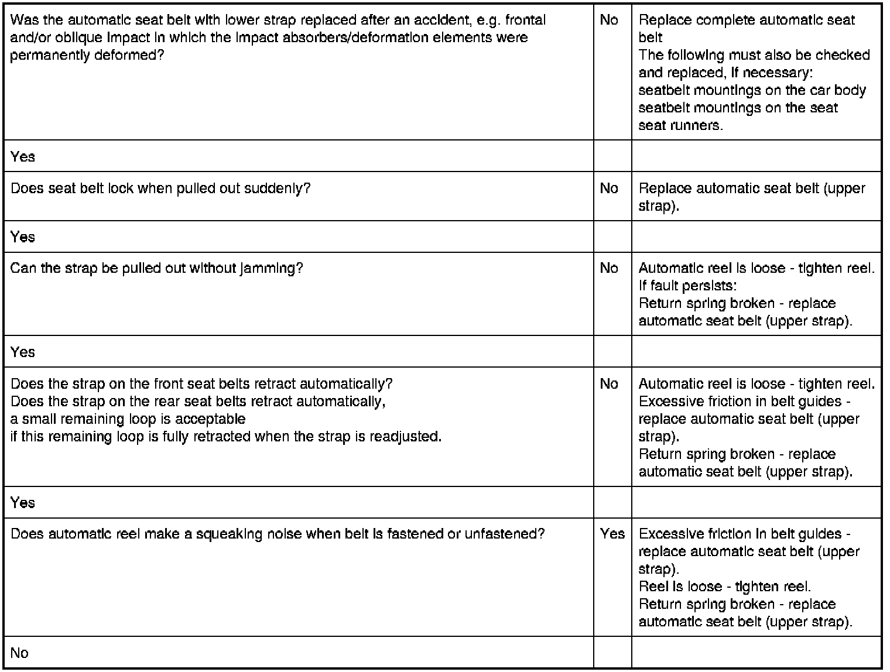
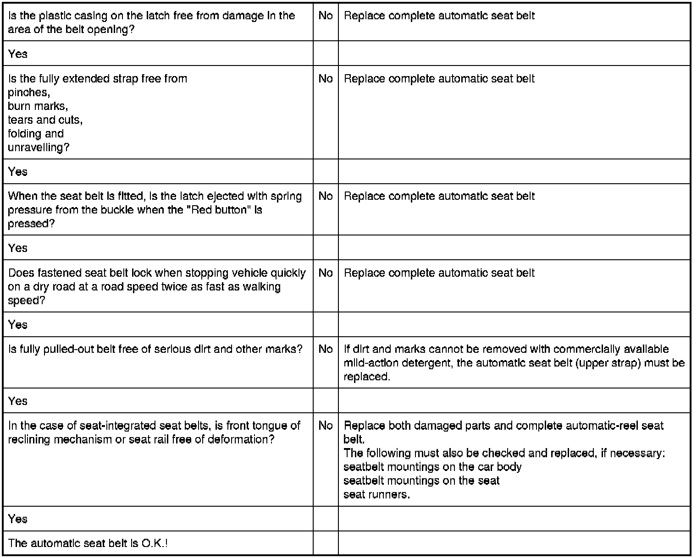

Operation CHARM
: Car repair manuals for everyone.
Home
>>
BMW
>>
2007
>>
X3 3.0si (E83) L6-3.0L (N52K)
>>
Repair and Diagnosis
>>
Restraints and Safety Systems
>>
Seat Belt Systems
>>
Testing and Inspection
>>
Inspection List for Automatic Seat Belt
Inspection List for Automatic Seat Belt
72 11 ... - Inspection list for automatic
seat belt

